|
|
|
|
Nintendo 64 Game Boy N. GAMECUBE Game Boy Advance |
|
|
|
Playstation Playstation 2 |
|
|
| Dreamcast |
|
Juegos de Moda |
|
Pokém. Snap(N64) RE Code Vero. (DC) S.Smash Bros (N64) Power Stone 2 (DC) Zelda:M.'s M. (N64) Phantasy S.O. (DC) F. Fantasy IX (PS) Sonic Adv. 2 (DC) Pokémon St. (N64) |
|
Otras Secciones |
|
Colaboraciones Actualizaciones Ant. Noticias Ant. Encuestas Ant. |
|
E-Mail
|
| 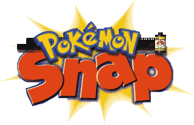 | 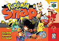 Pokémon Snap
-Guarda en Cartucho- -Textos en castellano- - 64 Pokémon - Valoración 8 |
| 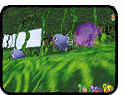 Los Poliwags salen de su escondite con repetidas pester-balls. |
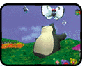 El snorlax levanta la cabeza con un golpe y se levanta a bailar con la pokéflauta. |
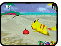 Pikachu se acerca a buscar una manzana. Buena forma para fotografiar a un Pkm de más cerca. |
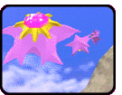 Para que aparezcan 3 Starmies tienes que fotografiar antes 3 Staryus. |
Pokémon Snap es ante todo un juego original. Dotado de una camara de fotos, tu objetivo es inmortalizar todos los pokémon que te encuentres en tu recorrido. Al oirlo puede resultar sencillo, pero sólo en planteamiento,
pues las situaciones pueden llegar a ser las más dispares que te puedas imaginar y que nunca hayas visto hacer a un Pokémon. Desde Pikachu rodando sobre un Voltorb hasta "cabalgando" un Articuno. Desde luego situaciones que un buen fan de Pokémon sabrá apreciar. Uno de
los atractivos del juego es el hecho de que es la primera vez que veremos en un juego cómo se comportan los Pokémon en su hábitat natural (en total 64 tipos), cuáles son sus costumbres, sus poses (especial mención a las de Meowth) y en muchos casos también oiremos sus divertidas voces.
Pero no sólo tendremos que contemplar los preciosos paisajes y hacer fotos a todos los Pokémon, porque muchos no se dejarán tan fácilmente, y claro, tendrás que apañartelas para que el pokémon salga en condiciones en la foto, porque, por ejemplo, si le
sacas una foto por la espalda, el profesor Oak, que es el encargado de puntuarnos las fotos, les dará una puntuación mínima. La solución está en los propios ítems o objetos que el mismo profesor Oak nos irá dando a lo largo del juego. Éstos son una
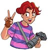
manzana, una pesterball y la pokéflauta. Tambien nos servirán, con el pretexto de alterarlos, para que en algunos casos evolucionen (como Bellsprout, Grimer, Charmeleon, Slowpoke, Magikarp o Staryu). Estarán presentes las 3 aves legendarias: Articuno, Zapdos y Moltres, escondidas en un huevo cada una
y en diferentes rutas (habrá que encontrar la manera de que salgan). En definitiva, un cartucho muy divertido en general, te gusten o no los Pokémon (si te gustan, por eso, mucho mejor, claro), con un apartado gráfico que sin llegar a ser espectacular cumple con su cometido. Apartado sonoro desapercibido (inglés), menos cuando se
escucha algún Pkm (con sus voces reales). Tiene diferentes objetivos pero sólo para 1 jugador, eso sí, y su duración, si el jugador es mañoso (aunque la dificultad está muy bien ajustada), es más bien corta, pues es muy adictivo y te harás con los 64 en pocos dias. Lo bueno es que propone bastantes retos y
siempre puedes ir mejorando tus puntuaciones de las fotos.

Manzana
Pester-Ball
Pokéflauta
| 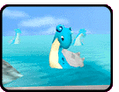 Para que se acerque Lapras, tienes que fotografiarlo antes (en el mar), y a todos los que salen, luego te lo encontrarás cerca. |
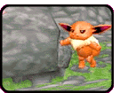 Chansey deja a Evee cuando recibe un golpe con una manzana o pester-ball. |
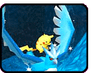 Para que Pikachu se monte en articuno es difícil, tienes que darle un golpe (manzana o pester-ball) al Zubat que lo tiene cogido en la ruta de la cueva, Pikachu caera con globos de paracaidas y romperá el huevo de Articuno para montarse sobre él. |
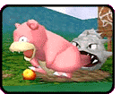 Slowbro se consigue tirando una manzana al lado suyo, justo donde hay un espacio marrón, sin hierba. Allí pondrá la cola en el agua y se le pegará un Shellder. |
| Más Secretos y Fotos Curiosas (1/2) |
lawebdelvideojuego.com
lawebdelvideojuego.com